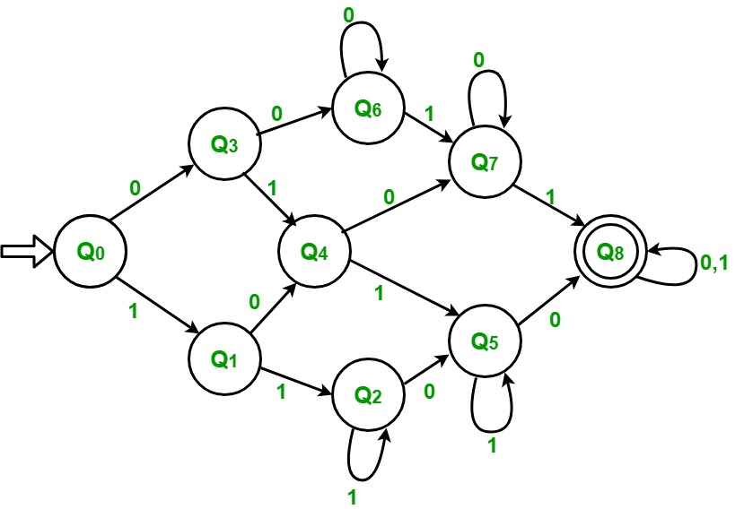

Problem – Draw detereministic finite automata (DFA) of a string with at least two 0’s and at least two 1’s.
The first thing that come to mind after reading this question us that we count the number of 1’s and 0’s. Thereafter if they both are at least 2 the string is accepted else not accepted. But we do not have any concept of memory in a DFA so we cannot do it by this method.
Input : 1 0 1 1 0 0 Output : Accepted Input : 1 1 1 0 1 Output : Not accepted
Approach Used –
The first thing we observe is that both 0’s and 1’s should be at least 2. If any of these is less than 2, then string will not be accepted. In this string will be accepted in only last case where both 0’s and 1’s will be at least 2.
| State | Count of 0 | Count of 1 |
|---|---|---|
| Q0 | 0 | 0 |
| Q1 | 0 | 1 |
| Q2 | 0 | >=2 |
| Q3 | 1 | 0 |
| Q4 | 1 | 1 |
| Q5 | 1 | >=2 |
| Q6 | >=2 | 0 |
| Q7 | >=2 | 1 |
| Q8 ACCEPTED | >=2 | >=2 |
Initially count of both 0 and 1 is zero and we are on state Q0.
- Step-1: If input is 1 then count of 1 increases to 1. Goto state Q1
If input is 0 then count of 0 increases to 1. Goto state Q3 - Step-2: If input is 1 then count of 1 increases to 2. Goto state Q2
If input is 0 then count of 0 increases to 1. Goto state Q4 - Step-3: If input is 1 then count of 1 keeps increasing by 1. Remain in the same state
If input is 0 then count of 0 increases to 1. Goto state Q5 - Step-4: If input is 1 then count of 1 increases to 1. Goto state Q4
If input is 0 then count of 0 increases to 2. Goto state Q6 - Step-5: If input is 1 then count of 1 increases to 2. Goto state Q5
If input is 0 then count of 0 increases to 2. Goto state Q7 - Step-6: If input is 1 then count of 1 keeps increasing by 1. Remain in the same state.
If input is 0 then count of 0 increases to 2. Goto state Q8 - Step-7: If input is 1 then count of 1 increases to 1. Goto state Q7
If input is 0 then count of 0 keeps increasing by 1. Remain in the same state. - Step-8: If input is 1 then count of 1 increases to 2. Goto state Q8
If input is 0 then count of 0 keeps increasing by 1. Remain in the same state. - Step-9: If input is 1 then count of 1 keeps increasing by 1. Remain in the same state.
If input is 0 then count of 0 keeps increasing by 1. Remain in the same state.
If string is finished then ACCEPTED
